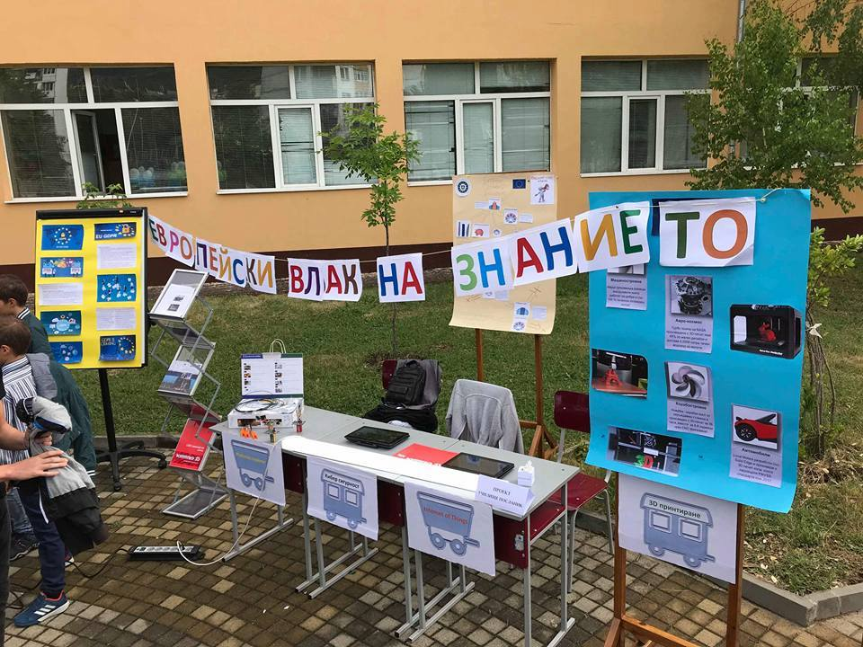
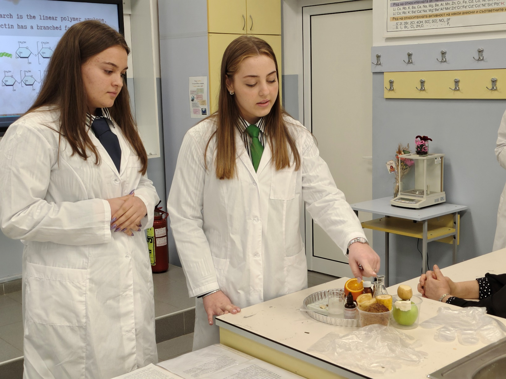
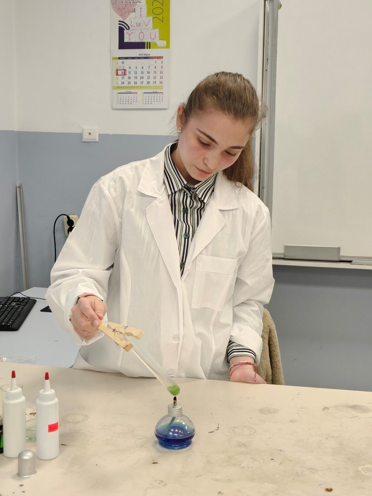
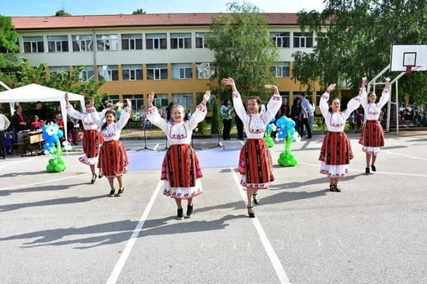

About our Program
Erasmus+ is a European Union program designed to support collaboration and
exchange between educational institutions across Europe and beyond.
It aims to strengthen partnerships between schools, universities,
and other learning organizations, creating valuable opportunities
for students and teachers to connect, learn, and grow together.

The core of the Erasmus+ project lies in building strong international relationships
between educational facilities. Through various exchange programs, schools and
universities work together on joint projects, share teaching methods, and explore innovative approaches to learning.

These partnerships encourage the exchange of knowledge, culture, and experiences,
allowing participants to develop a deeper understanding of different educational systems
and perspectives. Students and educators benefit from working in diverse environments,
enhancing their communication skills, teamwork, and global awareness.

In addition to fostering collaboration, Erasmus+ promotes the development of key competencies
and skills that are essential for success in today's interconnected world. Participants engage in
various activities, including workshops, seminars, and cultural exchanges, which help them acquire
valuable skills such as critical thinking, problem-solving, and adaptability.

Erasmus+ promotes unity through education,
helping to create a network of schools that are open, cooperative, and committed to improving learning across borders.